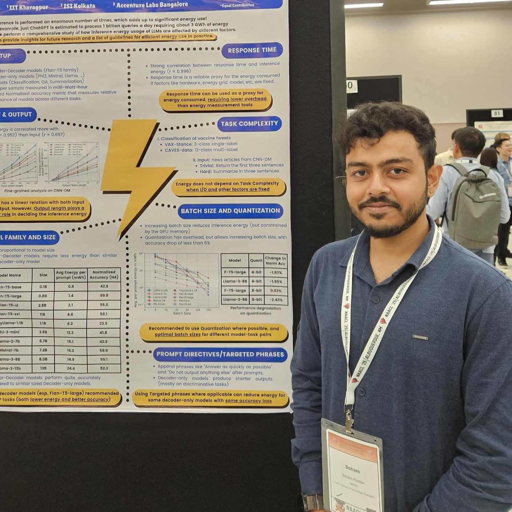
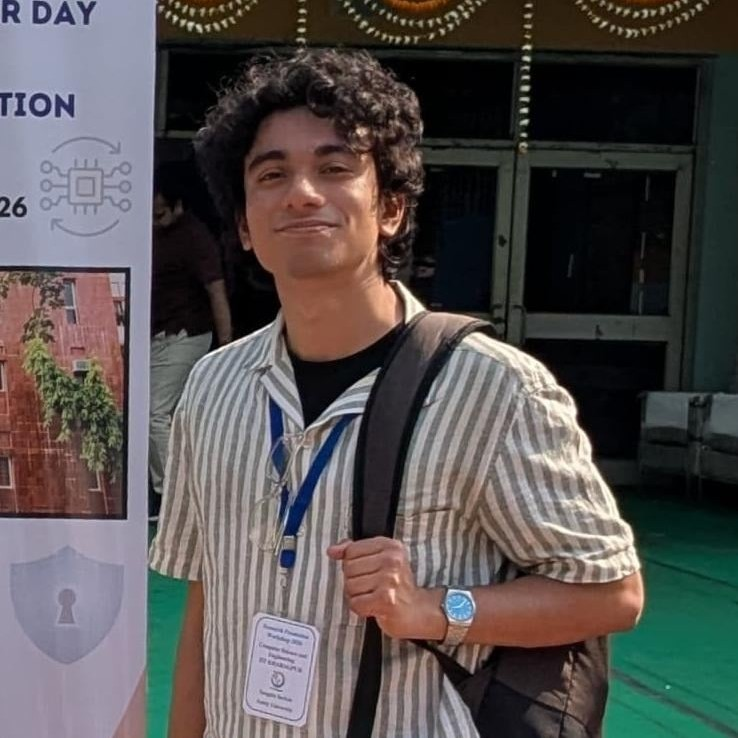
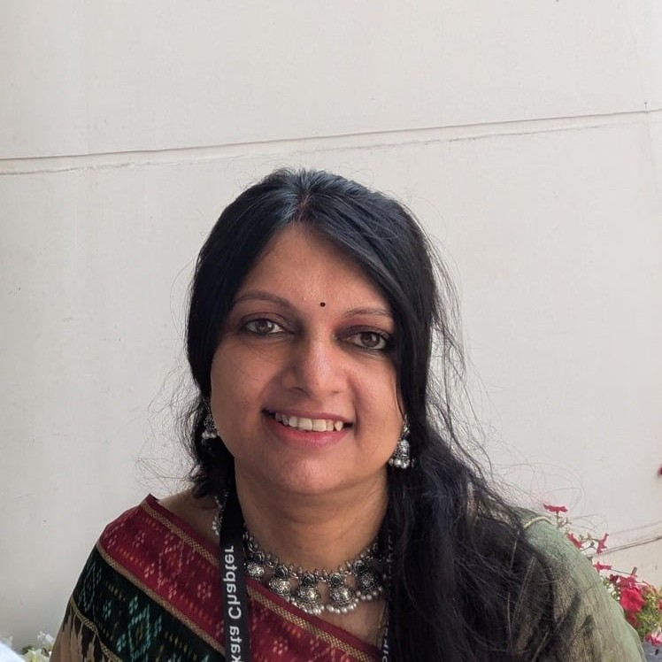
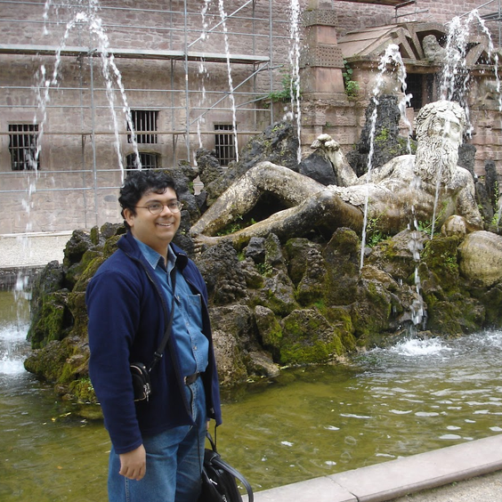

01
Dr. Soham Poddar
NielsenIQ

06 · Organizers
This special session is organized by a group of researchers and practitioners working across academia and industry.
NielsenIQ

TCS, IIT Kharagpur
Hyland Software

Bhawanipur Global Campus

IIT Kharagpur

Get in touch